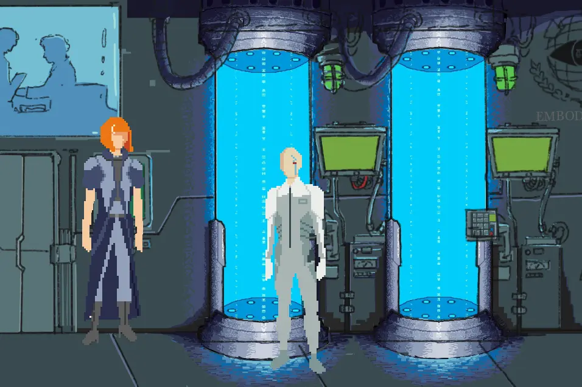

Proxy is a story driven point and click game, made in Godot as a part of the 7 day long game jam.

Player controls the main character across 3 rooms, and is able to interact with other characters and objects. The dialogue with either of those is able to spout new insights, represented as thought items.
By combining throughts in the inventory, player can go and deduce and slowly figure out what crime supposedly happened, and which of the present characters is guilty, simulating a thought process.
The concept was slightly altered due to technical complications and the deadline. We weren't able to fit in the inventory piece to the rest of the game, but it's main funcionality was implemented. There is an invisible value tracker which opens up new dialogue options rewarding exploration and interactions. There are two possible endings for player to reach.
Inventory system example